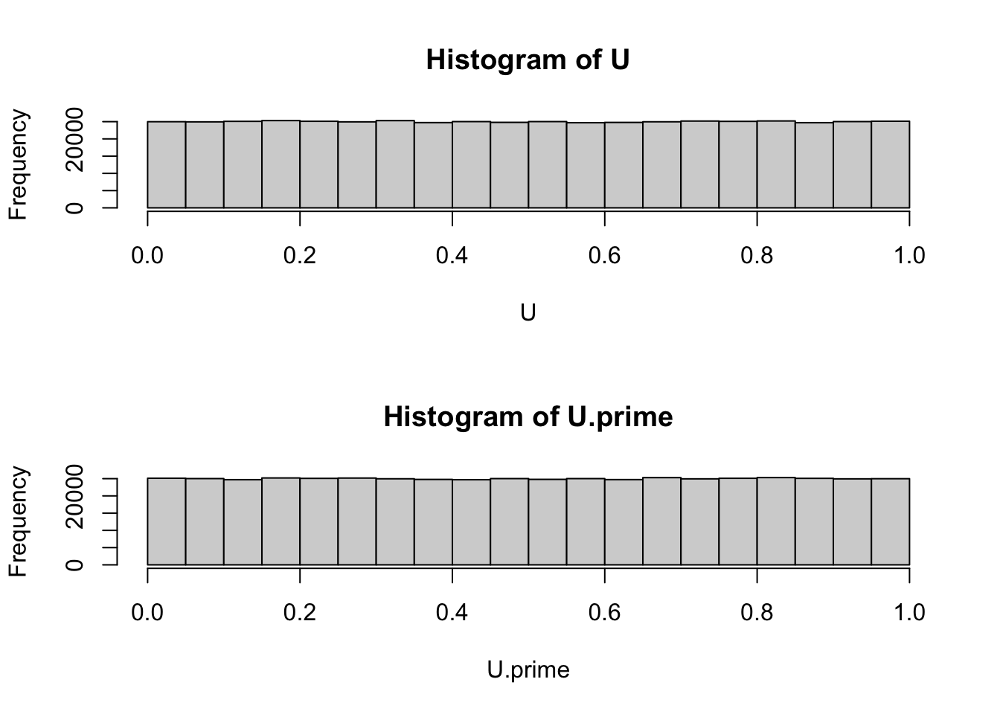
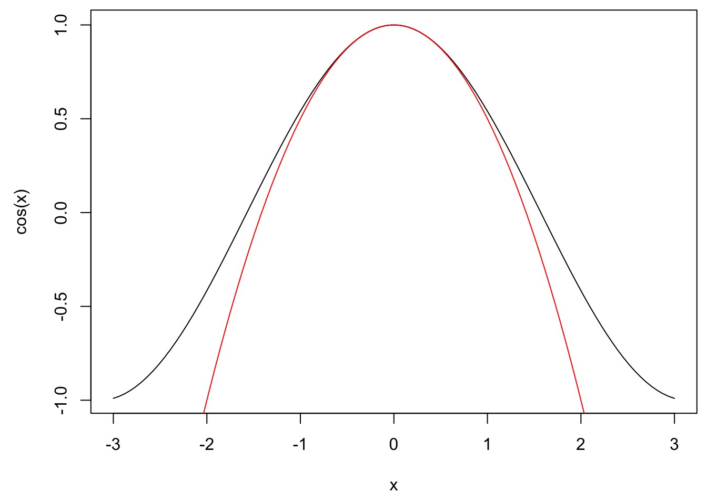
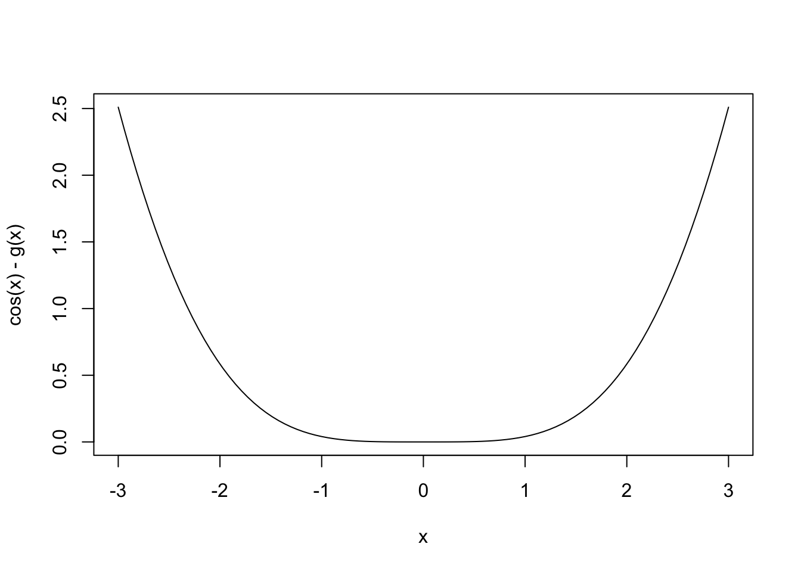

Chapter 4 Monte Carlo methods
4.1 Studying models via simulation
Recall:
Definition 4.1 In discrete case, expectation is defined to be
\(E(X)=\sum_x xP(X=x)\)
\(E(f(X))=\sum_x f(x)P(X=x)\)
In continuous case, we have
\(E(X)=\int_{\mathcal R}x\phi(x)dx\)
\(E(f(X))=\int_{\mathcal R}f(x)\phi(x)dx\) where \(\phi(x)\) is the density of \(X\) at \(x\)
\(\underline{\text{Law of Large Numbers (LLN)}}\)
Let \((X_j)_{j\in \mathcal N}\) be a sequence of i.i.d. copies of \(X\)
Then \[\lim_{N\to \infty}\frac1N \sum_{j=1}^{N}f(X_j)=E[f(X)]\]
Ideas for approximating \(E[f(X)]\):
Use \(E(X)=\int x\phi(x)dx\) and try to numerically approximate the integral, this relates to numerical analysis and will not be covered here.
\(E(f(X))=\lim_{N\to \infty}\frac1N \sum_{j=1}^{N}f(X_j) \approx \frac1N \sum_{j=1}^{N}f(X_j)\) for a large N
i.e., \(Z^{MC}_N=\frac1N\sum_{j=1}^{N}f(X_j)\), where \(X_j\), j=1,…,N are i.i.d. copies of \(X\), then \(Z^{MC}_N\approx E[f(X)]\)
Example 4.1 Assume \(X\sim N(\mu, \sigma^2)\), assume we want to estimate \(E[sin(X)]\), i.e., \(f(X)=sin(X),\quad Z^{MC}_N=\frac1N\sum_{j=1}^{N}sin(X_j),\quad X_1,...,X_N\sim i.i.d. N(\mu, \sigma^2)\)
# aim: estimate E(sin(X)) where X is normal
mu <- 1
sigma <- 1
N <- 1000000
X <- rnorm(N, mu, sigma)
mean(sin(X))## [1] 0.5099003Applications:
- computing probabilities
Recall a indicator function: \(\boldsymbol 1_A(x)=\begin{cases}1 & \text{ if }x\in A\\ 0 & \text{ if }x\notin A\end{cases}\)
\(\implies E(\boldsymbol 1_A(x))=0\times P(\boldsymbol 1_A(x)=0)+1\times P(\boldsymbol 1_A(x)=1)=P(X\in A)\\ \implies P(X\in A)=E(\boldsymbol 1_A(x))=\frac1N\sum_{j=1}^{N}\boldsymbol 1_A(X_j)\), which is exactly the proportion of \(X_j\) which are in A
# aim: estimate P(X in A), where X is a random variable and A is a set.
# assume X ~ N(0,1)
# let A=[1, 2]
N <- 1e6
X <- rnorm(N)
f.of.X <- ifelse(X>=1 & X<=2, 1, 0)
mean(f.of.X)## [1] 0.135295# In fact, we can get the exact result
pnorm(2)-pnorm(1)## [1] 0.1359051- computing integrals
Assume we want to approximate \(\int_{a}^{b}h(x)dx\)
Choose \(X\sim U(a,b)\implies \phi(x)=\begin{cases}\frac{1}{b-a} & \text{ if } x\in [a,b]\\0 & \text{ if } x\notin [a,b]\end{cases}\)
\(E(f(X))=\int f(x)\phi(x)dx=\int_a^b h(x)dx\)
Also, \(f(x)\phi(x)= f(x)\boldsymbol 1_{[a,b]}\frac{1}{b-a}=f(x)\frac{1}{b-a} \forall x \in [a,b] \implies f(x)=h(x)(b-a)\)
So, if \(X\sim U(a,b)\), then \(\int_a^b h(x)dx=E((b-a)h(X))\approx \frac1N \sum_{j=1}^{N}(b-a)h(X_j)\), where \(X_j\sim U(a,b)\) are i.i.d.
# aim: integrate h(x)=x^2 from 2 to 3
N <- 1e6
X <- runif(N, 2, 3)
f.of.X <- X^2*(3-2)
mean(f.of.X)## [1] 6.336415Analytic solution:
\(\int_{2}^{3}x^2dx=\frac13x^3|^{3}_{x=2}=\frac133^3-\frac132^3=\frac1327-\frac138=9-\frac83=\frac{19}{3}\)
19/3## [1] 6.3333334.2 Monte Carlo estimates
4.2.1 Computing Monte Carlo estimates
Recall: \(Z_N^{MC}=\frac1N\sum_{j=1}^{N}f(X_j)\approx E(f(X))\), where \(X_j\) are i.i.d. copies of \(X\)
need to generate the \(X_j\) (see chapter 1 in the book)
need to apply \(f\) to get \(f(X_j)\)
need to compute the average, a lot of memory is needed to store \(X_1,...,X_N\)
To save memory, we could sum up the values, as we generate them:
s <- 0
for j=1,...,N:
generate X_j
s <- s + f(X_j)
result: \(s/N\)
The downside is that the for loop in R is relatively slow, so there’s a trade-off. Use the for loop if you run out of memory.
We will also need to compute the sample variance of the \(f(X_j):\)
\(s^2_{f(X_j)}=\frac{1}{N-1}\sum_{j=1}^{N}(f(X_j)-\bar{f(X)})^2=\frac{1}{N-1}\sum_{j=1}^{N}f(X_j)^2-\frac{N}{N-1}(\frac1N\sum_{j=1}^{N}f(X_j))^2\), where \(\bar{f(X)}=\frac1N\sum_{j=1}^{N}f(X_j)\)
s <- 0
t <- 0
for j=1,..,N:
generate X_j
s <- s + f(X_j)
t <- t + (f(X_j))^2Then \(Z_N^{MC}=s/N, s^2=\frac{t}{N-1}-\frac{N}{N-1}(Z_N^{MC})^2\)
4.2.2 Monte Carlo error and Choice of sample size
Recall:
\(Z_N^{MC}=\frac1N\sum_{j=1}^{N}f(X_j)\approx E(f(X))\)
\(bias(Z_N^{MC})=E(Z_N^{MC})-E(f(X))\)
\(std. error(Z_N^{MC})=std.dev(Z_N^{MC})=\sqrt{Var(Z_N^{MC})}\)
\(MSE(Z_N^{MC})=E(Z_N^{MC}-E[f(X)]^2)=Var(Z_N^{MC})-bias(Z_N^{MC})^2\)
\(E(Z_N^{MC})=E(\frac1N\sum_{j=1}^{N}f(X_j))=\frac1N\sum_{j=1}^{N} E(f(X_j))=\\ \frac1N\sum_{j=1}^{N} E(f(X))=\frac N N E(f(X))=E(f(X))\)
In the above, we use the fact that \(X_j\) are i.i.d copies of \(X\)
Hence, we get \(bias(Z_N^{MC})=0\), and \(MSE(Z_N^{MC})=Var(Z_N^{MC})=std. error(Z_N^{MC})^2\)
- \(Var(Z_N^{MC})=Var(\frac1N \sum_{j=1}^{N}f(X_j))\\=\frac{1}{N^2}\sum_{j=1}^{N}Var(f(X_j))=\frac{1}{N^2}\sum_{j=1}^{N}Var(f(X))=\frac1N Var(f(X))\)
Hence, we get \(MSE(Z_N^{MC})=Var(Z_N^{MC})=\frac1N Var(f(X))\)
- \(RMSE(Z_N^{MC})=\sqrt{\frac{Var(f(X))}{N}}=\frac{std.error(Z_N^{MC})}{\sqrt{N}}\)
To achieve \(RMSE(Z_N^{MC})\le \epsilon\), we need \(\epsilon\ge RMSE(Z_N^{MC})\\ \implies \epsilon^2\ge MSE(Z_N^{MC})=\frac1N Var(f(X))\\\implies N\ge \frac{Var(f(X))}{\epsilon^2}\)
We can estimate \(Var(f(X))\) from data, using the sample variance of the \(f(X_j)\).
4.2.3 Refined error bounds
\(e_N^{MC}=Z_N^{MC}-E(f(X))\)
Recall Law of Large Numbers (LLN), \[\lim_{N\to \infty}\frac1N\sum_{j=1}^{N}f(X_j)=E(f(X))\\ \implies \lim_{N\to \infty}Z_N^{MC}=E(f(X))\\ \implies \lim_{N\to \infty}e_N^{MC}=\lim_{N\to \infty}(Z_N^{MC}-E[f(X)])=0\]
Note that this is true even if \(Var(f(X))=\infty\)
Recall Central Limit Theorem (CLT),
\[\frac{\sqrt{N}e_N^{MC}}{\sigma}=\frac{\sqrt N}{\sigma}(Z_N^{MC}-E[f(X)])\\= \frac{\sqrt N}{\sigma}(\frac1N \sum_{j=1}^{N}f(X_j)-\frac1N\sum_{j=1}^{N}E[f(X)])\\ =\frac{1}{\sqrt N}\sum_{j=1}^{N}\frac{f(X_j)-E[f(X)]}{\sigma}\to^d N(0,1)\text{ as } N\to \infty\]
where \(\sigma=\sqrt{Var(f(X_j))}=\sqrt{Var(f(X))}\)
So, for large N (approximately):
\[\frac{\sqrt N}{\sigma}e_N^{MC}\sim N(0,1)\\ \implies e_N^{MC}\sim N(0, \frac{\sigma^2}{N})=N(0, (\frac{\sigma}{\sqrt N})^2)\]
Hence, we can have:
\(P(|e_N^{MC}|>1.96\frac{\sigma}{\sqrt N})= 5\%\) or
\(P(E[f(X)]\in [Z_N^{MC}-1.96\frac{\sigma}{\sqrt N},Z_N^{MC}+1.96\frac{\sigma}{\sqrt N}])=95\%\)
4.3 Variance reduction methods
4.3.1 Importance sampling(IS)
Recall: \(Z^{MC}_N=\frac1N\sum_{j=1}^{N}f(X_j)\approx E(f(X))\), where \(X_j\) are i.i.d. copies of \(X\)
Let \(\phi\) be the density of \(X\) and \(\psi\) be the density of \(Y\)
\(E(f(X))=\int f(x)\phi(x)dx=\int f(x)\frac{\phi(x)}{\psi(x)}\psi(x)dx=E(\frac{f(Y)\phi(Y)}{\psi(Y)})\)
\(Z_N^{IS}=\frac 1N \sum_{j=1}^{N}f(y_j)\frac{\phi(y_j)}{\psi(y_j)}\), where \(Y_j\) are i.i.d. copies of \(Y\)
Recall: \(MSE(Z_N)=Var(Z_N)+bias(Z_N)^2=Var(Z_N)\)
We know \(MSE(Z_N^{MC})=\frac{Var(f(X))}{N}\)
\(Var(Z_N^{IS})=Var(\frac 1N \sum_{j=1}^{N}\frac{f(Y_j)\phi(Y_j)}{\psi(Y_j)})=\frac{1}{N^2}\sum_{j=1}^{N}Var(\frac{f(Y_j)\phi(Y_j)}{\psi(Y_j)})\)
(Note that:
\(E(\frac{f(Y_j)^2\phi(Y_j)^2}{\psi(Y_j)^2})=\int \frac{f(Y_j)^2\phi(Y_j)^2}{\psi(Y_j)^2}\psi(Y_j)dy=\int \frac{f(Y)^2\phi(Y)}{\psi(Y)}\phi(Y)dy=E(\frac{f(X)^2\phi(X)}{\psi(X)})\) and
\(E(\frac{f(Y)\phi(Y)}{\psi(Y)})^2=E(f(X))^2\)
thus, we have \(Var(\frac{f(Y_j)\phi(Y_j)}{\psi(Y_j)})=E(f(X)^2\frac{\phi(X)}{\psi(X)})-E(f(X))^2\\=E(f(X)^2)-E(f(X))^2-E(f(X)^2)+E(f(X)^2\frac{\phi(X)}{\psi(X)})\\=Var(f(X))-E(f(X)^2(1-\frac{\phi(X)}{\psi(X)}))\)
)
So, we get \(Var(Z_N^{IS})=\frac{1}{N^2}\sum_{j=1}^{N}Var(\frac{f(Y_j)\phi(Y_j)}{\psi(Y_j)})=\frac 1N[Var(f(X))-E(f(X)^2(1-\frac{\phi(X)}{\psi(X)}))]\)
In sum,
\(MSE(Z_N^{MC})=\frac 1N Var(f(X))\)
\(MSE(Z_N^{IS})=\frac 1NVar(f(Y)\frac{\phi(Y)}{\psi(Y)})=\frac 1N Var(f(X))-\frac 1NE(f(X)^2(1-\frac{\phi(X)}{\psi(X)}))\)
If \(\frac 1NE(f(X)^2(1-\frac{\phi(X)}{\psi(X)}))\) is positive, then the importance sampling estimates is better. The question now is which \(Y\) should we choose to make this term positive.
To do this, we want to make \(\psi\) large, but note that \(\psi\) is the density of \(Y\), i.e., \(\int \psi(x)dx=1\). Thus, when somewhere gets larger, somewhere else must get smaller, so now the real question is where should we make \(\psi\) large (That’s why we call it Importance sampling)
Observing the term \(E(f(X)^2(1-\frac{\phi(X)}{\psi(X)}))\). It turns out that we make \(\psi\) large where \(f(X)^2\) is large.
# aim: estimate E(exp(-(X-3)^4)) where X ~ N(0,1)
# using Importance Sampling
f <- function(x) exp(-(x-3)^4)
x <- seq(-5, 5, length.out= 100)
par(mai=c(0.9, 0.9, 0.1, 0.1)) # mai = margin in inches
plot(x, f(x), type="l")
lines(x, dnorm(x), col="blue")
# step 1: standard Monte-Carlo estimation
N <- 1e6
X <- rnorm(N)
mean(f(X))## [1] 0.02100563RMSE.MC <- sqrt(var(f(X))/N)
RMSE.MC## [1] 0.0001167092# step 2: Importance Sampling estimate
x <- seq(-5, 5, length.out= 100)
par(mai=c(0.9, 0.9, 0.1, 0.1)) # mai = margin in inches
plot(x, f(x), type="l")
lines(x, dnorm(x), col="blue")
lines(x, dnorm(x, 3), col="red")
lines(x, dnorm(x, 3, 0.8), col="red")
lines(x, dnorm(x, 3, 0.6), col="red")
lines(x, dnorm(x, 3, 0.4), col="red")
# step 2: Importance Sampling estimate
# we have to choose Y
# here, we use Y ~ N(3, 0.6^2)
x <- seq(-5, 5, length.out= 100)
par(mai=c(0.9, 0.9, 0.1, 0.1)) # mai = margin in inches
plot(x, f(x), type="l")
lines(x, dnorm(x), col="blue")
lines(x, dnorm(x, 3, 0.6), col="red")
Y <- rnorm(N, 3, 0.6)
phi <- function(x) dnorm(x)
psi <- function(x) dnorm(x, 3, 0.6)
mean(f(Y)*phi(Y)/ psi(Y))## [1] 0.02108159RMSE.IS <- sqrt( var(f(Y) * phi(Y) / psi(Y)) / N)
RMSE.IS## [1] 3.106608e-05RMSE.MC/RMSE.IS## [1] 3.7568044.3.2 Antithetic variables (AV)
Recall: \(Z_N^{MC}=\frac 1N \sum_{j=1}^{N}f(X_j)\approx E(f(X))\), where \(X_j\) are i.i.d. copies of \(X\)
We give up independence in this section.
\(E(Z_N^{MC})=E(\frac 1N \sum_{j=1}^{N}f(X_j))=\frac 1N \sum_{j=1}^{N}E(f(X_j))=E(f(X))\)
So unbiasedness still holds w/o independence assumption.
Recall:
\(Var(X_1+X_2)=Var(X_1)+Var(X_2)+2Cov(X_1, X_2)\)
\(Var(X)=Cov(X, X)\)
\(Cov(aX, Y)= aCov(X, Y)\)
\(Cov(X+Y, Z)=Cov(X, Z)+Cov(Y, Z)\)
\(Cov(X, Y)= Cov(Y, X)\)
\(Var(Z_N^{MC})=Var(\frac 1N \sum_{j=1}^{N}f(X_j))=\frac{1}{N^2}Var(\sum_{j=1}^{N}f(X_j))\)
The error will be smaller, if the covariance therm is negative.
\(Var(\sum_{j=1}^{N}f(X_j))=Cov(\sum_{j=1}^{N}f(X_j), \sum_{k=1}^{N}f(X_k))=\sum_{j=1}^{N}\sum_{k=1}^{N}Cov(f(X_j), f(X_k))\\=\sum_{j=1}^{N}Var(f(X_j))+2\sum_{k=1}^{N-1}\sum_{j=k+1}^{N}Cov(f(X_j), f(X_k))\)
Note:
\(\sum_{j=1}^{N}Var(f(X_j))\) is the diagonal term, and is the same as standard MC.
\(\sum_{k=1}^{N-1}\sum_{j=k+1}^{N}Cov(f(X_j), f(X_k))\) is the lower triangle term (if you put \(j\) on the horizontal axis, and \(k\) on vertical axis.)
By symmetry, we need to multiply \(\sum_{k=1}^{N-1}\sum_{j=k+1}^{N}Cov(f(X_j), f(X_k))\) by 2
Now, we want to make \(2\sum_{k=1}^{N-1}\sum_{j=k+1}^{N}Cov(f(X_j), f(X_k))\) negative. But it is difficult to have all pairwise covariances negative for more than two variables. Hence, we give in, and we only want to have pairs with negative covariance. These pairs are called antithetic pairs. In addition, we require that each pair is independent of all the other pairs.
i.e., \((X_1, X_1'),....,(X_{N/2}',X_{N/2}')\), where each pair has \(Cov(f(X_k), f(X_k)')\le 0\) and no correlation btw pairs. Also, all \(X_k\) and all \(X_k'\) have the same distribution as \(X\) does (still identically distributed).
With this in mind, we get \(\sum_{k=1}^{N-1}\sum_{j=k+1}^{N}Cov(f(X_j), f(X_k))=Cov(f(X_1), f(X_1'))+...+Cov(f(X_{N/2}), f(X_{N/2}'))\\=\sum_{k=1}^{N}Cov(f(X_k), f(X_k'))=NCov(f(X), f(X'))\)
\(MSE(Z_N^{AV})=\frac 1N Var(f(X))+\frac 1N Cov(f(X), f(X'))=\frac 1N Var(f(X))+\frac 1N Corr(f(X), f(X'))Var(f(X))\\ \implies MSE(Z_N^{AV})=\frac 1N Var(f(X))(1+\rho)=\frac 1N MSE(Z_N^{MC})(1+\rho)\)
So if \(\rho\) is positive, the error actually gets larger.
Note:
One can also write \(Z^{AV}_N=\frac 1N \sum_{k=1}^{N/2}(f(X_k)+f(X_k'))\)
\(Corr(X,Y)=\frac{Cov(X,Y)}{\sqrt{Var(X)Var(Y)}}\)
Example 4.2 Consider \(U\sim U(0,1)\), then \(U'=1-U\sim U(0,1)\)
\(\rho=corr(U,U')=-1\)
\(E(U)=1/2\) (analytic solution)
\(Z_N^{AV}=\frac 1N\sum_{k=1}^{N/2}(U+(1-U))=\frac 1N \frac N2=\frac 12\) (exactly equals analytic solution)
What about \(E(U^2)\)?
\(Z_N^{AV}=\frac 1N\sum_{j=1}^{N}(U^2+(1-U)^2)\)
# aim: estimate E(U^2) where U ~ U(0,1)
# using an Antithetic Variables (AV) estimates
# for comparison: Monte Carlo estimates
N <- 1e6
U <- runif(N)
mean(U^2)## [1] 0.3335496RMSE.MC <- sqrt(var(U^2)/N)
RMSE.MC## [1] 0.0002982989# AV estimate
M <- N/2
U <- runif(M)
U.prime <- 1-U
cor(U^2, U.prime^2)## [1] -0.8748336sum(U^2 + U.prime^2)/N # quite close## [1] 0.3333303RMSE.AV <- sqrt(var(U^2) / N * (1+cor(U^2, U.prime^2)))
RMSE.AV## [1] 0.0001055881par(mfrow=c(2,1))
hist(U)
hist(U.prime)
par(mfrow=c(1,1))\(\underline{Lemma}\): Let \(g:\mathcal{R}\to \mathcal{R}\) be monotonically increasing and \(U\sim U(0,1)\) Then \(Cov(g(U), g(1-U))\le 0\)
(Note: usually in our cases, we have \(g:[0,1]\to \mathcal{R}\) be monotonically increasing)
Proof. Let \(V\sim U(0,1)\), independent of \(U\)
Case 1: \(U\le V \implies g(U)\le g(V)\) and \(g(1-U)\ge g(1-V)\)
Case 2: \(U>V \implies g(U)\ge g(V)\) and \(g(1-U)\le g(1-V)\)
You can check that \((g(U)-g(V))(g(1-U)g(1-V))\le 0\) in either case.
Goal: \(Cov(g(U), g(1-U))\le 0\)
\[Cov(g(U), g(1-U))=E(g(U)g(1-U))-E(g(U))E(g(1-U))\\ =E(g(V)g(1-V))-E(g(V))E(g(1-V))\\ =\frac 12 (E(g(U)g(1-U))+E(g(V)g(1-V))-E(g(U))E(g(1-V)))-E(g(V))E(g(1-U))\\ =\frac 12 E[g(U)g(1-U)+g(V)g(1-V)-g(U)g(1-V)-g(V)g(1-U)]\\ =\frac 12 E[(g(U)-g(V))(g(1-U)-g(1-V))]\le 0\]
Caution: \(E(g(U)g(1-U))=E(g(V)g(1-V))\ne E(g(U)g(1-V))\). Recall that \(U\perp V\)
Note: If \(X\perp Y\), thern \(E(XY)=E(X)E(Y) \implies E(g(U))E(g(1-V))=E[g(U)g(1-V)]\)
4.3.3 Control variates
\(E(f(X))=E(f(X)-g(X)+g(X))=E(f(X)-g(X))+E(g(X))\), where \(E(f(X)-g(X))\) is estimated using Monte Carlo, and \(E(g(X))\) has analytic solution (easy to compute).
\(Z^{CV}_N=\frac 1N \sum_{j=1}^{N}(f(X_j)-g(X_j))+E(g(X))\)
Proposition 4.1 \(MSE(Z_N^{CV})=\frac 1NVar(f(X)-g(X))\)
If \(f(X_j)\approx g(X_j)\), then \(f(X_j)-g(X_j)\) will be small. In fact, we only need \(g(X)\approx f(X)\) in the area where X actually takes values.
Example 4.3 \(X\sim N(0,1), E(cos(X))=?\)
i.e., \(f(x)=cos(x)\)
Note that since \(X\sim N(0,1)\), \(X\) takes most values near 0, so we only need to find \(g(X)\) which fits \(f(X)\) well near 0.
Recall:
\(cos(0)=1, cos'(0)=-sin(0)=0, cos''(0)=-cos(0)=-1\)
Taylor expansion: \(f(x+h)\approx f(x)+hf'(x)+\frac{h^2}{2}f''(x)+...\)
\(cos(x)\approx cos(0)+xcos'(0)+\frac{x^2}{2}cos''(0)=1-\frac{x^2}{2}\)
Hence, choose \(g(x)=1-\frac{x^2}{2}\)
Since \(E(X)=0, Var(X)=E(X^2)=1\), we get \(E(g(X))=1-\frac{E(X^2)}{2}=1-\frac 12=\frac 12\)
# aim: estimate E(cos(X)), where X ~ N(0,1)
# using the Control Variates Method
# for comparison: standard Monte Carlo
N <- 1e6
X <- rnorm(N)
mean(cos(X))## [1] 0.6063134RMSE.MC <- sqrt(var(cos(X))/N)
RMSE.MC## [1] 0.0004472972# using Control Variates
g <- function(x) 1-x^2/2
x <- seq(-3,3, length.out = 100)
par(mai=c(0.9, 0.9, 0.1, 0.1))
plot(x, cos(x), type="l")
lines(x, g(x), col="red")
mean(cos(X)-g(X)) + 1/2## [1] 0.6067752RMSE.CV <- sqrt(var(cos(X)-g(X))/N)
RMSE.CV## [1] 0.0003059437RMSE.CV/RMSE.MC## [1] 0.683983plot(x, cos(x)-g(x), type="l")
var(cos(X)-g(X))## [1] 0.09360154var(cos(X))## [1] 0.2000748Let’s consider a generalization of the control variate method.
Assume two r.v.’s \(X\) and \(Y\) such that:
\(Corr(X,Y)\ne 0\)
\(E(Y)\) is known
Write \(X=X-cY+cY\implies E(X)=E(X-cY)+cE(Y)\)
Again \(E(Y)\) is known, and we will use MC to estimate \(E(X-cY)\). Also we choose \(c\) such that MSE is minimized.
\(Z^{CV}_N=\frac 1N \sum_{j=1}^{N}(X_j-cY_j)+cE(Y)\), where \((X_j, Y_j)\) are i.i.d. copies of \((X,Y)\)
\(MSE(Z^{CV}_N)=\frac 1N Var(X-cY)=\frac 1N Cov(X-cY, X-cY)\)
\(Cov(X-cY, X-cY)=Cov(X,X)-2cxCov(X,Y)+c^2Cov(Y,Y)\\=Var(X)-2cCov(X,Y)+c^2Var(Y):=v(c)\)
Hence we need to find c which minimizes \(Var(X-cY)=v(c)\)
\(v(c)=Var(X)-2cCov(X,Y)+c^2Var(Y)\)
\(v'(c)=-2Cov(X,Y)+2cVar(Y)\)
\(v''(c)=2Var(Y)>0\)
So, set \(v'(c)=0\implies -2Cov(X,Y)+2cVar(Y)=0\implies c=\frac{Cov(X,Y)}{Var(Y)}\)